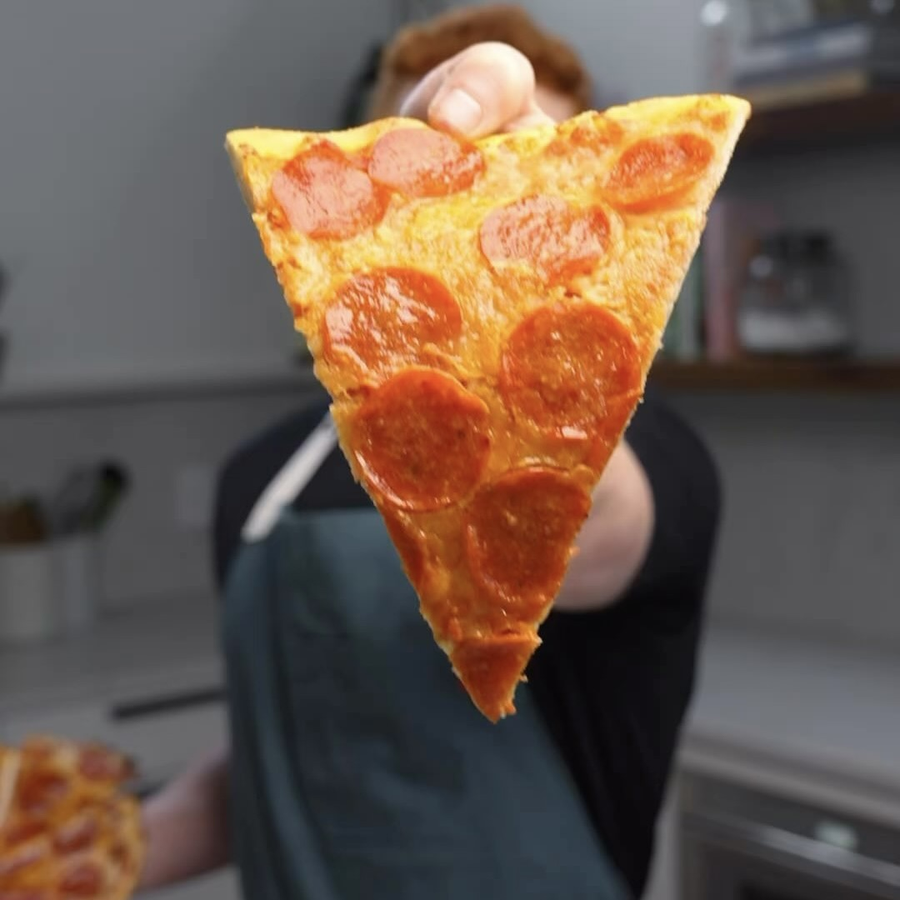

Pizza Pepperoni
Ingredientes:
- 12 g Harina de coco
- 5 g Levadura Nutricional
- 150 g Yogur Griego sin grasa
- 75 g Claras de huevo
- 120 g Salsa Marinara baja en grasa
- 56 g Queso Mozzarella Part Skim
- 25 Pepperonis de Pavo
Instrucciones:
- Para la masa, mezcla la harina con levadura con la de coco y la levadura con el yogur griego y
claras de huevo, hasta obtener una pasta espesa.
- Extiende tan uniformemente como sea posible en papel para hornear. Intenta hacer los bordes lo más
gruesos que se puedan para una mejor corteza.
- Hornear en el horno a 450° F por 15 minutos o hasta que se ponga crujiente.
- Una vez crujiente, añade la salsa marinara, el queso mozzarella y los pepperoni de pavo.
- Hornealo por otros 6 a 8 minutos o hasta que esté a su gusto.